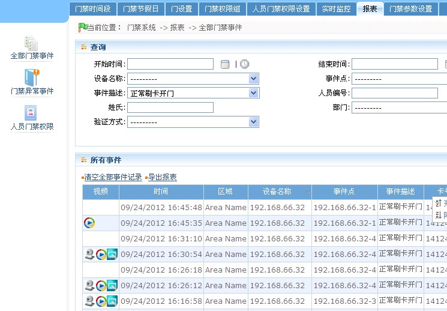

这里主要是事件记录（含视频联动记录）

单击左侧摄像头小图标，即可对视频服务器上视频联动录像进行回放。 右击摄像头小图标，点击弹出框中“从视频服务器导出”即可将视频从视频服务器中导出到客户端，导出文件默认放在C:\OCXDownloadFiles路径下。
当用户开启【实时监控】页面或者将【门禁参数】页面中的【设置是否开启实时监控】设置为【是】， 那么当发生视频联动录像事件时，系统后台将会自动进行录像或者抓拍图像，相关文件直接保存到服务器已经设置的路径中， 当录像完成以后，报表中将会显示关于该条视频联动事件的录像文件图标和抓拍文件图标，点击相应图标即可下载相应文件 到本地。